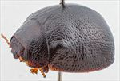
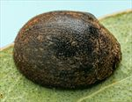
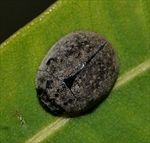
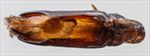
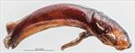
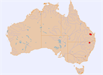

Click on images to enlarge
{kind=link}

Female, Wallangra, N.E. New South Wales
{kind=link}

Female, Wallangra, N.E. New South Wales
![Male, Eidsvold, southern Queensland [25-055916]](assets/image/Ta59/Ta59_A25-055916c1.jpg){kind=link}

Male, Eidsvold, southern Queensland [25-055916]
{kind=link}

Aedeagus, dorsal view (Eidsvold, S.E. Queensland)
{kind=link}

Aedeagus, lateral view (Eidsvold, S.E. Queensland)
{kind=link}

Distribution
Name
Trachymela sp. Ta59
Reference specimen
25-055916, Eidsvold, southern Queensland.
Adult Description
Length: ♂ 5.3–5.6 mm (n=3), ♀ 5.6–6.3 mm (n=8).
Colouration:
- Head: very dark brown, almost black, rarely with area between rear of eyes slightly paler in shade; mandibles very dark brown with black tips or completely black; labrum sometimes lighter brown; antennae uniformly straw-brown, rarely with proximal antennomeres fractionally darker.
- Pronotum: dark brown, concolorous with or fractionally darker than head, with a thin border along lateral margin of a lighter brown shade.
- Scutellum: very dark brown, concolorous with adjacent area of pronotum, or black.
- Elytra: uniformly very dark brown, fractionally darker shade than disc of pronotum, or black, sometimes with a thin, slightly paler shade along lateral margins; humeral callus concolorous with surrounds.
- Venter & Legs: venter almost uniformly very dark brown or black; legs similar; abdominal ventrites sometimes of fractionally paler shade; epipleura black.
- Cuticular Wax: grey or light brown, mostly distributed somewhat unevenly over most of dorsal surface except scutellum and a thin line along elytral suture that are almost wax-free; often two longitudinal series of small vague patches where cuticular wax is slightly more concentrated may be present on the elytra.
Morphology:
- Head: punctures moderate in size (pd ≈ 1.5–2×ef) and evenly and densely distributed. Antennae short (AL/BL: ♂ 35–36%, ♀ 32–35%), filiform.
- Pronotum: almost evenly curved transversely, very slightly explanate at extreme margins, lacking a foveal depression; a small, usually approximately round elevated and very slightly less densely punctured area present in line with each eye; puncturation clearly impressed in discal area, evenly to slightly unevenly distributed and moderately dense, becoming gradually coarser towards lateral margins. Front margins join lateral margins in a smoothly rounded right-angle, with lateral margin initially straight or very lightly curved for a short length and then curving smoothly and gradually towards rear margin.
- Scutellum: surface slightly rough and unpunctured.
- Elytra: body very small, almost hemispherical, greatest height viewed laterally is clearly in front of middle of elytral margin. Surface evenly curved, punctures distinct and evenly and closely distributed (pd ≈ 1.5–2×pd) over whole of disc, interstices flat with much smaller punctures scattered sparingly over them, interstices in posterior third little more convex, rarely with some interstices merging to form inconspicuous short longitudinal weals, surface continuous under humeral callus. Vertical extension of epipleura considerable (HCE/PW = 0.37–0.41).
- Venter: prosternal process narrowest anteriorly and gradually widening towards posterior, closed anteriorly, very sparse scatter of short setae at rear of prosternal process and mesoventrite; a single seta on anterior and median trochanter; front edge of metaventrite beveled, truncate; inner edge of posterior of epipleura lacking setae.
Male Genitalia (Aedeagus):
- Dimensions: moderate-sized (LPE ≈ 35–38% BL).
- Dorsal view: sides of shaft widest at base, then narrowing almost imperceptibly towards apex, the narrowing interrupted briefly by a fractional widening around ostium, from where the sides converge towards apex in a smooth arc; dorsal surface smoothly curved with short dorso-median channel present; dorso-lateral channels broad and well developed; ostium large, tip protruding slightly; ostial processes extend past apex with the distal extremes projecting as a pair of noticeably thickened and vertically oriented processes.
- Lateral view: shaft curved lightly and evenly over whole length from base to almost apex where curvature increases very briefly, thinning towards apex over 15% of length, tip deflexed, flagellum very thin.
Immature Stages
Unknown.
Similar species
- Ta30: also found on Angophora. It is somewhat larger, less convex in outline, lighter in colouring, has proportionally longer antennae, and the inner surface of its elytral epipleura are brown throughout.
- Ta35: very similar to Ta59, with both being very dark and strongly convex. Individuals of Ta35 are slightly smaller and almost invariably possess verrucose "wrinkles" near the elytral apex. The aedeagus is very similar in form in the two species; that of Ta59 tends to be very dark, almost black, while that of Ta35 is usually much lighter in shade. They are approximately the same length as a proportion of body length, but that of Ta59 is curved evenly in lateral view over most of its length while that of Ta35 is straight. Ta35 feeds on Blakella tessellaris, not Angophora.
- Ta36:
Notes
- Distribution & Abundance: Recorded from southern Queensland and northern New South Wales; relatively few specimens have been collected so far.
- Host Associations: All known specimens with host data were found on Angophora costata or A. leiocarpa.
- Morphological Variation: A small, strongly convex and uniformly dark brown species.
Copyright © 2026. All rights reserved.